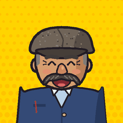
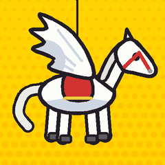
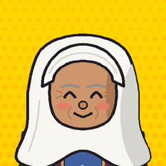

Ermek-baike. Drives the 22 since 2009. Before that a trolleybus on line 4 until they took the wires down in 2004. Never late, never early, never wrong (in his opinion). The moustache is canon.

Tulpar. The white plastic horse on the mirror. Nods at potholes. Talas has many potholes, so Tulpar is very busy.

Apa. Every grandmother on route 22. Brings apricots in summer, nan in winter, opinions all year.
Tima. Me. Student, headphones, rides the 22 to the Ped. Institute and back, draws on the phone.
All of this is made up except the tyres.